家乡简介
长沙市，别称“星城”，湖南省省会，特大城市，长株潭都市圈核心城市，是全省政治、经济、文化、科教、商贸与金融中心。根据国务院批复，长沙定位为长江中游地区中心城市、全国性综合交通枢纽城市、中部先进制造业基地、中部现代服务业中心及区域性科技创新高地。长沙地处湖南省东部偏北、湘江下游与长浏盆地西缘，总面积11819平方千米。
市域地形复杂多样，湘江两岸形成地势低平的冲积平原，东西两侧及东南面为地势较高的低山丘陵。气候属亚热带季风气候，春季气温变化较大，夏初雨水集中，伏秋高温持续时间长，冬季较为寒冷但严寒天气少见。长沙是首批国家历史文化名城，历经三千年城名城址不变，素有“屈贾之乡”“楚汉名城”“潇湘洙泗”之誉。马王堆汉墓、四羊方尊、三国吴简、岳麓书院、铜官窑等历史遗存闻名中外。这里既是清末维新运动和旧民主主义革命策源地之一，也是新民主主义革命的重要发祥地，留下了毛泽东、刘少奇等无产阶级革命家，以及屈原、贾谊、黄兴、蔡锷等一大批伟人名人的光辉足迹。
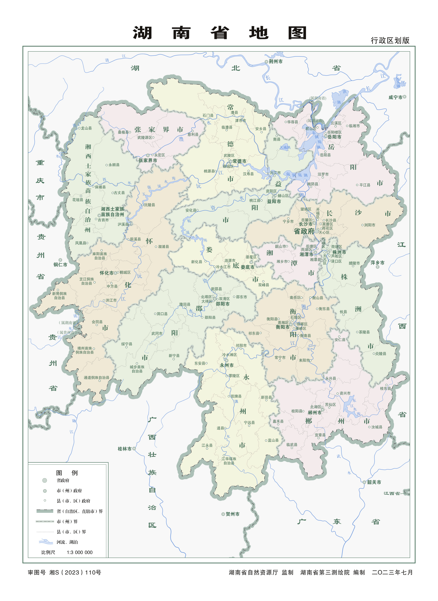
风景名胜
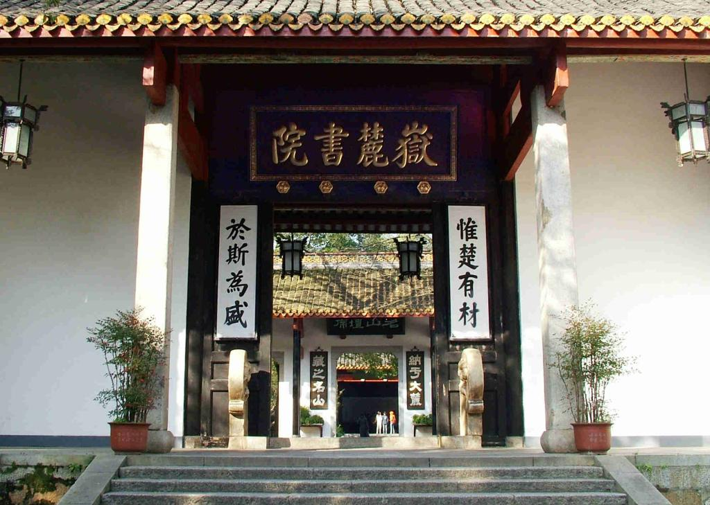
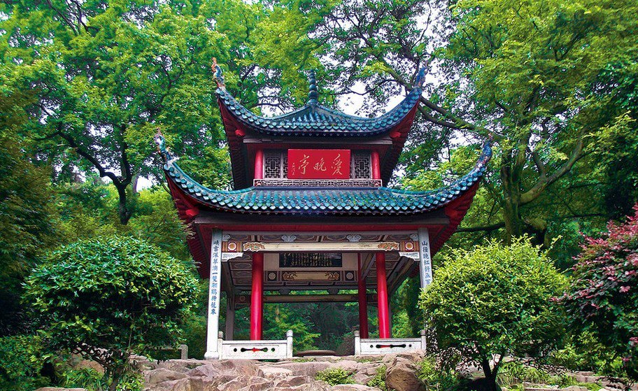
橘子洲
橘子洲位于湘江中心，是长沙最具代表性的地标之一。它被誉为“中国第一洲”，因盛产美橘而得名。洲上最引人注目的是青年毛泽东巨型雕塑，高达32米，展现了伟人风华正茂的气概。每逢重大节假日，这里还会上演震撼的焰火晚会，烟花在湘江上空绽放，与对岸的城市灯火交相辉映。漫步洲头，可远眺岳麓山，近观湘江水，感受“独立寒秋，湘江北去”的壮阔诗意。
杜甫江阁
杜甫江阁坐落在湘江边，是为纪念唐代大诗人杜甫而建的仿唐风格建筑。杜甫晚年曾两度流寓长沙，在湘江边度过了人生最后的时光，留下了大量脍炙人口的诗篇。江阁共四层，飞檐翘角，气势恢宏，登阁远眺，湘江美景尽收眼底。每当夜幕降临，华灯初上，江阁在灯光映照下金碧辉煌，与江中的倒影构成一幅动人的画卷，是欣赏长沙夜景的绝佳去处。
岳麓书院
岳麓书院位于岳麓山脚下，是中国历史上赫赫闻名的四大书院之一，始建于北宋开宝九年（976年），至今已有一千多年历史，被誉为“千年学府”。书院古建筑群保存完好，白墙黛瓦，古木参天，处处透着浓厚的书香气息。这里曾培养出王夫之、魏源等无数杰出人才，朱熹、张栻等理学大师也曾在此讲学。“惟楚有材，于斯为盛”的门联更是彰显了湖湘文化的深厚底蕴。
爱晚亭
爱晚亭坐落于岳麓山清风峡中，是中国四大名亭之一，始建于清乾隆五十七年（1792年）。亭名取自唐代诗人杜牧“停车坐爱枫林晚，霜叶红于二月花”的诗句。亭形为重檐八柱，顶部覆盖绿色琉璃瓦，古朴典雅。四周古枫环绕，每到深秋时节，漫山红叶，层林尽染，是爱晚亭最美的时刻。这里不仅是赏枫胜地，更是承载着中国革命历史记忆的地方，毛泽东青年时代常与友人在此纵论天下。
天心阁
天心阁位于长沙市中心的天心公园内，是长沙古城仅存的城楼，始建于明末，重修于清乾隆年间。阁楼共三层，碧瓦飞檐，朱梁画栋，雄踞于古城墙之上，自古有“潇湘古阁，秦汉名城”的美誉。登阁俯瞰，可一览长沙老城区的风貌。阁下的古城墙是长沙历经战火后留存的历史见证，见证了这座城市三千年的沧桑变迁。如今的天心阁已成为展示长沙历史文化的重要窗口，也是市民休闲健身的热门场所。
美食特色
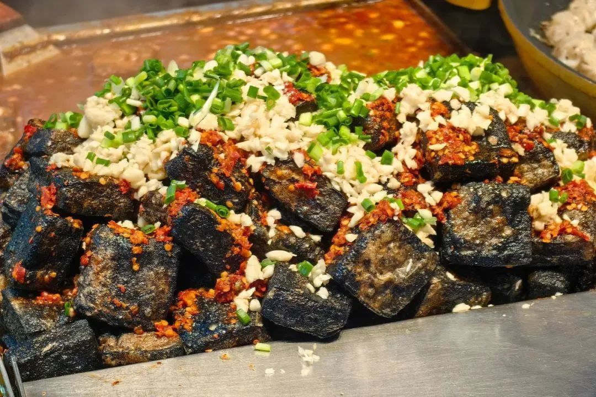
1. 臭豆腐：黑色经典的味觉革命
长沙臭豆腐以火宫殿的做法为代表，选用特制卤水长时间发酵的豆腐坯，投入滚烫的茶油中炸至外皮焦酥、内里蓬松多汁。出锅后，师傅会用筷子在豆腐中间精准戳开一个小口，灌入用蒜蓉、辣椒和脆萝卜丁调配的酱汁。不同于其他地区常见的浅灰色豆腐，长沙臭豆腐通体乌黑发亮，这种色泽来源于卤水中豆豉、香菇、冬笋等多种原料的复合作用。咬下瞬间，先是外层酥壳发出的清脆声响，紧接着是热气腾腾的嫩滑豆腐浆在口中四溢，酥脆与柔嫩、焦香与鲜辣在同一时刻交织，形成了极具冲击力的味觉反差。
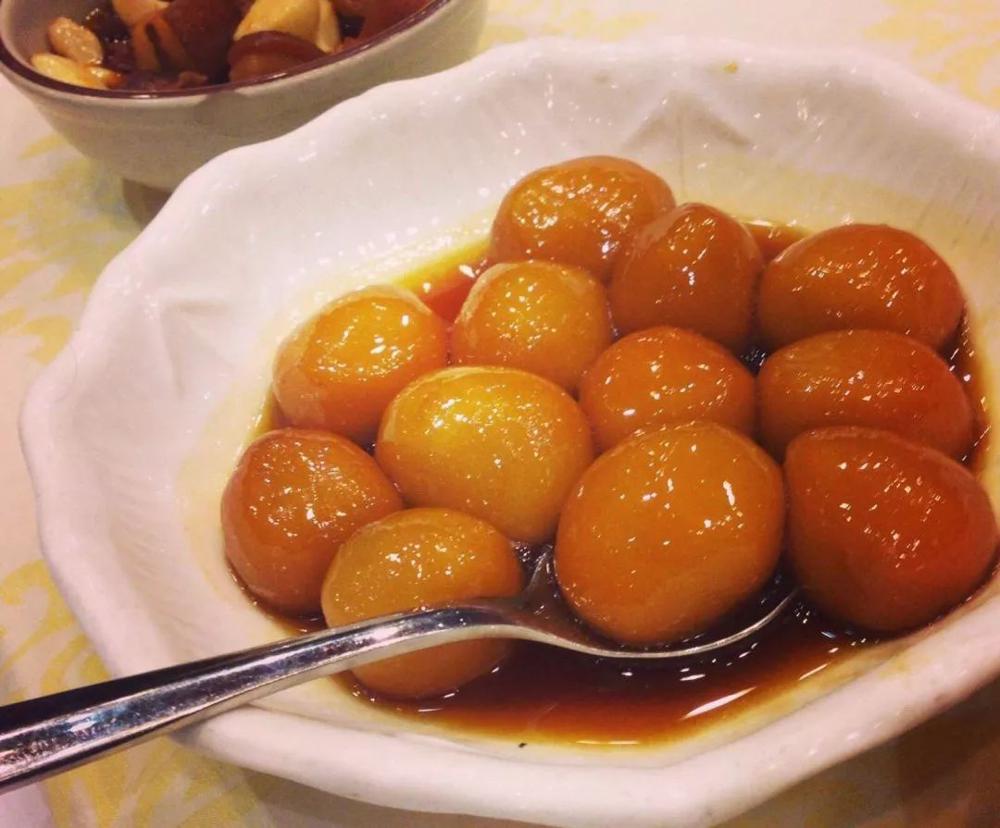
2. 糖油粑粑：穿越百年的甜蜜密码
这道起源于清末的市井小吃，将糯米粉揉成光滑的粉团，搓成小圆球后放入铁锅中，与红糖和茶油一同反复翻炒，直到表面均匀裹上一层透亮的琥珀色糖壳。老长沙人讲究吃李公庙的出品，其独特之处在于熬制糖油时会加入少许桂花糖，让原本单纯的甜味多了一层清幽花香，软糯的粑粑入口后甜而不腻、韧而不粘。制作这道小吃看似简单，实则极考验火候和耐心：糖温太高会发苦，太低则挂不住糖壳；翻炒时力度要均匀，才能让每一颗粑粑都包裹上同样厚度的糖衣。正宗做法坚持使用江西产的茶油，以小火慢慢将糖香和油香逼入粉团内部，现代一些改良版本会撒上芝麻增加香气层次，但也有人认为这反而掩盖了传统做法的纯粹风味。
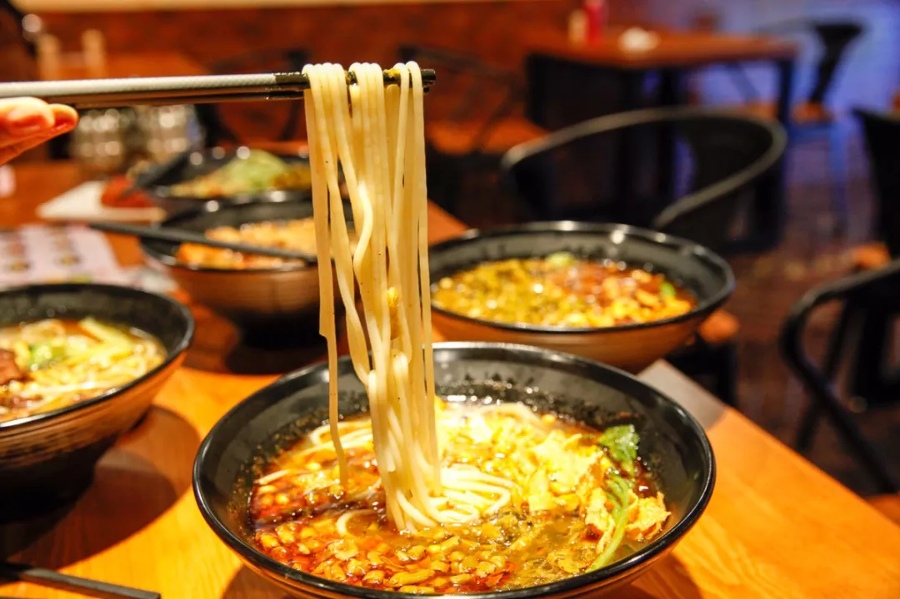
3. 米粉：晨光里的城市底色
长沙米粉是这座城市清晨最具代表性的味觉记忆，米粉本身分为扁粉和圆粉两派，扁粉宽而薄，更容易挂住汤汁的鲜美，圆粉则圆润弹滑，咬下去更有嚼劲。一碗地道的长沙米粉，灵魂在于汤底和码子，汤底多用新鲜猪骨和牛骨长时间熬煮，直到汤色乳白清亮、滋味醇厚，码子则是铺在粉上的各式浇头。有的店家以雪里蕻牛肉粉见长，雪里蕻的微酸清脆恰好化解了肉汤的厚重，大片软烂的牛肉和手工现切的米粉搭配得天衣无缝；有的则主打肉丸粉，坚持每日用新鲜猪肉现剁成馅，肉糜中掺入细碎的马蹄粒，经过反复搅打上劲后手工挤入沸水汆熟，肉丸松软中带着马蹄特有的清甜和爽脆。真正懂行的食客走进粉店，往往会用一句“带迅干”来点单，这要求店家将米粉快速焯熟后沥干水分，趁热拌入一勺猪油和酱油，粉条裹着油光却不腻口，简单直接的调味最能检验一家粉店的真功夫。
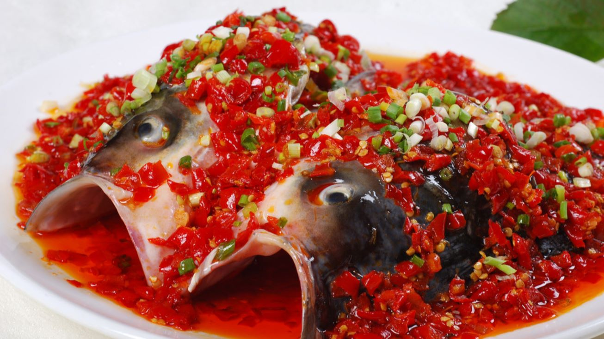
4. 剁椒鱼头：湘菜宴席的镇桌之宝
这道菜选用六斤以上的雄鱼头，硕大的鱼头铺展在盘中，表面厚厚地铺满由五种辣椒混合发酵一百八十天的剁椒，红亮夺目。蒸制时在鱼头底下垫入几片紫苏叶，既能去除河鲜的土腥气，又为整道菜增添了一缕清雅的草本香气。上桌时服务员会沿着盘边淋上白酒并点燃，青蓝色火焰跳跃升腾，寓意“鸿运当头”，也借此激发出剁椒和鱼脂的复合香气。吃鱼头讲究按部位顺序下筷：先夹鱼唇和鱼脑的胶质部分，感受入口即化的绵密；再吃鱼脸和鱼下巴的活肉，细嫩鲜辣；最后用汤汁拌入煮好的面条或泡上米饭，让每一口主食都吸饱酸辣鲜美的鱼汤精华。这道菜在长沙的年产业规模已十分可观，也衍生出了鱼头拌面、鱼汤泡饭等多种延伸吃法。
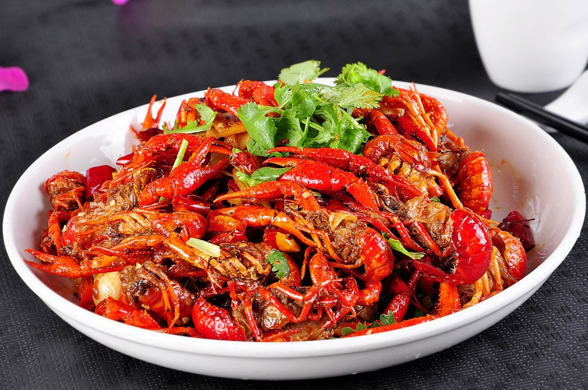
5. 口味虾：夜宵江湖的绝对王者
每年入夏，长沙夜宵摊档的小龙虾消费量便一路飙升。紫苏口味虾是这座城市夜宵文化的重要符号，做法是将处理干净的小龙虾用啤酒炖煮，加入大量新鲜紫苏叶和魔芋豆腐，紫苏特有的芳香与虾肉的鲜美在滚煮中充分融合，辣中透鲜的汤汁咸香微甜，吃完虾后剩下的汤底最适合拌入一份清水面条。另一种风格鲜明的做法是油爆虾，店家会严格挑选七到九钱重的清水虾，经过两百摄氏度热油的瞬间锁炸，虾壳迅速变红酥脆，虾黄完整保留在壳内。油爆虾本身不加调味，吃时蘸取特制酱汁，酱料通常融合了蒜蓉、辣椒和多种香辛料，近年来一些店家创新加入了芥末蛋黄酱，在传统的辛辣之上增添了柔和奶香和微微的冲劲，尤其受到年轻食客的喜爱。
我的母校
我的母校是长沙市第一中学，一所坐落在长沙清水塘畔的百年名校。更多关于母校的历史沿革、办学特色和校园风貌，可点击校名访问官网了解。
🔗 长沙市一中官网长沙市第一中学创建于1912年，初名湖南全省公立高等中学校，是湖南省最早的省立公办中学。学校历经校名更迭、校址七迁，1946年迁至小吴门外清水塘畔的现址，1952年定名为湖南省长沙市第一中学，现为湖南省教育厅唯一直属的省级示范性普通高级中学。百年校史上，清水塘的香樟林见证了十多万学子的青春与梦想。
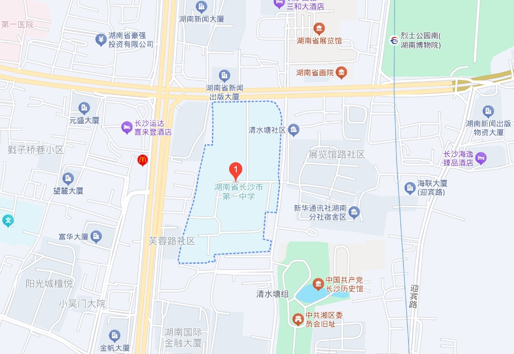
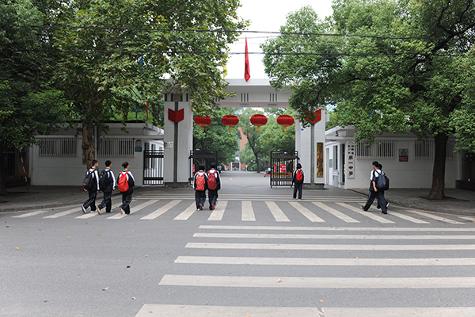
长沙市一中素以名师云集、人才辈出而著称。学校培养的毕业生中，有毛泽东、朱镕基等党和国家领导人，有世界著名作曲家谭盾、历史学家黄仁宇等文化名人，还有23位两院院士在科学领域开疆拓土。新时期以来，彭海琳、朱晓波、陈婷、刘庄等校友先后荣获“科学探索奖”，90后创业者姚颂领衔创造了中国运力最大的民商火箭纪录。这些名字背后，是一以贯之的“公勇勤朴”校训精神在代际间的传承。
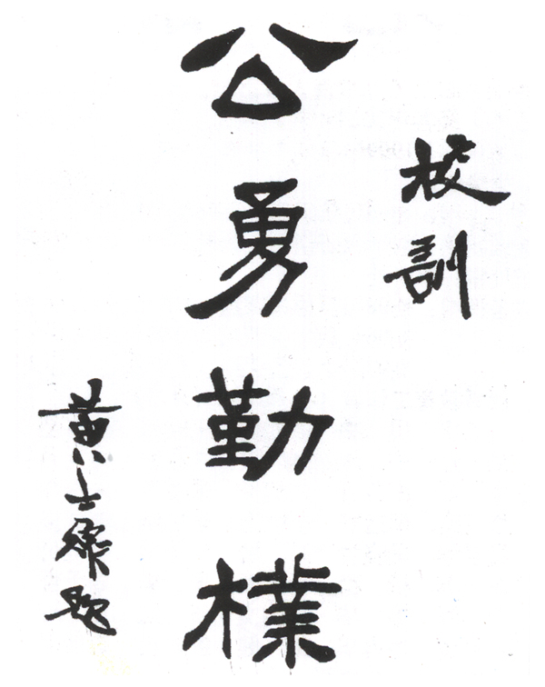
走进清水塘路的校园，香樟成林，花木扶疏，自然景观与人文景观水乳交融。校史馆内静静陈列着49位烈士的英雄事迹，无声地诉说着“以天下国家为己任”的一中精神。从百年前符定一先生初创时的宏愿，到今天“为学生的终身发展奠基，为学生的终身幸福导航”的办学理念，这片土地始终是长沙这座城市教育薪火最为炽热的传承之地，也是无数一中人无论走多远都会回望的精神原点。
🔗 一中美景